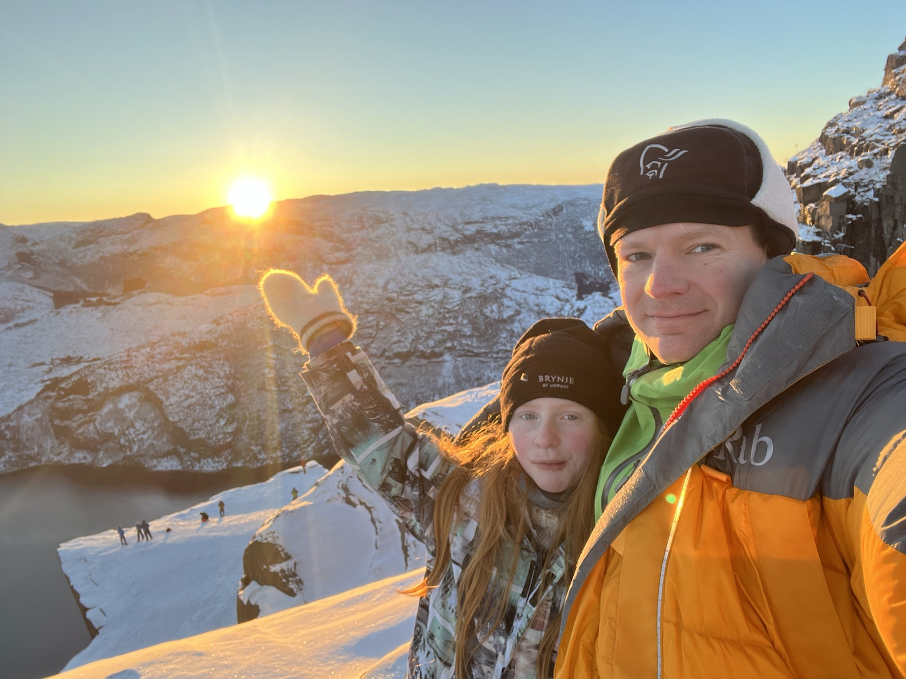

Kjerne Familien er Pri 1.
Vårt andre hjem. 4. Generasjon eier av Lille Andholmen. Liger sør for Mandal.
Aktivt medlem siden 2014. sittet i styret både lokalt og nasjonalt.

Småviltjakta starter 10. September. Da er jeg ikke på jobb. Jakter både på fjell og sjø

Sommer og vinter. Topptur på truger ved vindstille og skyfrie forhold, er noe jeg setter høyt

I en Ironman-konkurranse er mantraet korte steg og langsiktige mål. Man må mestre de fire disiplinene: svømming, sykling, løping og ernæring.